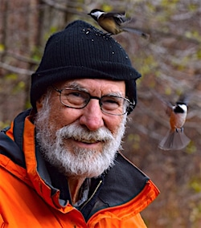

Friends,
As you know, the Fellowship of Reconciliation just celebrated 100 years of history as an organization. Paul R. Dekar has compiled this history in his new book, Dangerous People: The Fellowship of Reconciliation Building a Nonviolent World of Freedom, Justice, and Peace.
FOR members like you are how we have been able to make an impact on our world these past 100 years, and FOR members like you are what this book is all about.
Published this year and presented at this past July's centennial Seabeck conference hosted by Oregon FOR and Olympia (WA) FOR, Dangerous People highlights our illustrious peace-building history and includes a foreword by FOR's executive director, Rev. Kristin Stoneking. The book begins with FOR's origins at the start of World War I, discusses our involvement in the U.S. Civil Rights Movement, and ends with FOR's present-day support of the Movement for Black Lives.
We are proud to share this work with you, and to invite you to a book party with the author, Paul Dekar, in New York!
The book signing party will be held at Shadowcliff, FOR's headquarters at 521 N Broadway, Nyack, NY, on Sept. 20 from 7:00 to 9:00 pm. Please visit our facebook event page.
Dangerous People is available now at our online bookstore, and will also be available for sale and signed by the author at the party. The price is $30.
For more information on Dangerous People or the book party, reply to this email. We hope to see you there!
About the author
Paul R. Dekar, a retired academician and sought-after speaker, is a long-time FOR member and former National Council chair who currently lives with his partner Nancy in Ontario, Canada. Paul is the author of Creating the Beloved Community, which also provides a narrative of the Fellowship of Reconciliation's history.
Peace,
Jonette O'Kelley Miller, M.P.A.
Director of Development
Fellowship of Reconciliation
Photos: The FOR archival photos are among the hundreds of photos in Dangerous People; author Paul Dekar. |